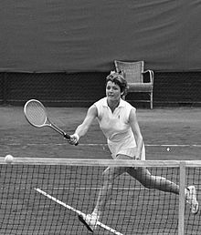

A change from sleek to bulky furniture took place in the 1970s. The everyday slender styles moved to a bigger, bulkier, and chunky style of furnishings. Additionally, the color palette was dominated by earth tones, which became quite popular in this decade. Avocado greens, harvest golds, oranges, and earthy browns dominated the color palettes of furniture and accompanying decor.
BOOKS
BEST SELLING OF THAT TIME
Holes. by Louis Sachar.
Girl with a Pearl Earring. by Tracy Chevalier.
Bridget Jones's Diary. by Helen Fielding.
The Secret History. by Donna Tartt.
Jurassic Park. by Michael Crichton.
We Were the Mulvaneys. by Joyce Carol Oates.
American Pastoral. by Philip Roth. Paperback.
All the Pretty Horses. by Cormac McCarthy. Paperback.
ENTERTAINMENT

Sixties Entertainment The sixties was a time of revolution. New things were coming out, things that children hadn't ever thought of. This decade changed the way families lived with the introduction of new entertainment such as cassettes, video games, comics, sports, festivals and concerts. Sport Olympics For the 214 athletes that travelled to Rome in 1960 to compete in the Olympics was not only a great honour but also great entertainment. The Olympics held in Rome in 1960 was the first games at which broadcaster paid The Olympic Organising Committee a fee for the broadcast rights to the Olympic games. Four years later the Olympic games were held in Tokyo. Television pictures were broadcast via satellite for the first time. This provided pictures and audio of the 1964 Tokyo Games. In total, 40 countries tuned in to the Tokyo Games. Cricket Cricket was also a big sport in Australia. Not only could people play cricket or even backyard cricket with their families and friends, they could also watch the team they support on television. With legends such as Gordon Rorke who was famous for 'dragging' back his foot during his delivery stride so that when he let the ball go he was several feet beyond the bowling crease. Tennis In the sixties tennis was a popular sport to play and watch. Some families would go out and watch a tennis game on an afternoon, some would watch it on the television, while some might go down to the local courts and play a few games. Tennis was a great game to play in Australia, not only in the sixties but now too. Tennis icons such as Margaret Court were the reason people were so entertained. Her style of playing the game became known to Australians in the sixties. She was known for her heavy ground strokes and strong serve. She was one of only three players to complete what is called the 'boxed set' by winning the singles, doubles and mixed titles at all four majors. She collected 62 major titles all together. Horse Racing Families got dressed up in their smartest outfits to attend a major horse racing event in Australia in the 1960's. It was great entertainment for the whole family especially when you're watching your own horse run. Horse races such as the Melbourne cup were described as the best. Tension throughout the whole event. Hi Jinx, Lord Fury, Even Stevens, Gatum Gatum, Polo Prince, Light Fingers, Galilee, Red Handed and Rain Lover were all Melbourne Cup winners from 1960 to 1969.
FACTS
United States President Lyndon B. Johnson signs the Civil Rights Act of 1964 into law.
NASA's Mariner 4 space probe successfully approaches Mars and becomes the first spacecraft to take images of a planet from deep space.
Sidney Poitier wins the Academy Award for "Best Actor"becoming the first black actor to win that honor.
The computer coding language BASIC (Beginner's All-Purpose Symbolic Instruction Code) is introduced.
The Ford Motor Company begins to produce and sell the Ford Mustang.
FASHION

The Sixties was a decade of huge fashion, music and social change. Conventions were challenged and old attitudes faded. The voting age dropped to 18, mini skirts became the norm and pop music blared from every teenager’s radio. People had more money and a disposable income than before and now had the time to enjoy it. The Sixties created great optimism and will always be remembered as a time of freedom, social change and fun!
Fashion of the 1960s featured a number of diverse trends. It was a decade that broke many fashion traditions, mirroring social movements during the time. Around the middle of the decade, fashions arising from small pockets of young people in a few urban centers received large amounts of media publicity, and began to heavily influence both the haute couture of elite designers and the mass-market manufacturers.
TECHNOLOGY